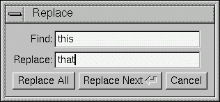
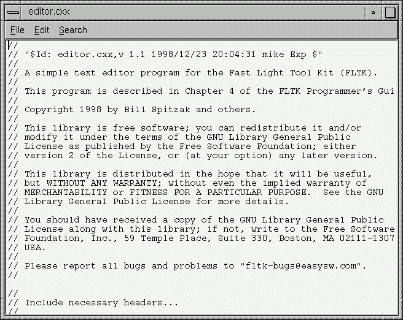

This chapter takes you through the design of a simple FLTK-based text editor.
Since this will be the first big project you'll be doing with FLTK, lets define what we want our text editor to do:
Now that we've outlined the goals for our editor, we can begin with the design of our GUI. Obviously the first thing that we need is a window, which we'll place inside a class called EditorWindow:
class EditorWindow : public Fl_Double_Window {
public:
EditorWindow(int w, int h, const char* t);
~EditorWindow();
Fl_Window *replace_dlg;
Fl_Input *replace_find;
Fl_Input *replace_with;
Fl_Button *replace_all;
Fl_Return_Button *replace_next;
Fl_Button *replace_cancel;
Fl_Text_Editor *editor;
char search[256];
};
Our text editor will need some global variables to keep track of things:
int changed = 0; char filename[256] = ""; Fl_Text_Buffer *textbuf;
The textbuf variable is the text editor buffer for our window class described previously. We'll cover the other variables as we build the application.
The first goal requires us to use a menubar and menus that define each function the editor needs to perform. The Fl_Menu_Item structure is used to define the menus and items in a menubar:
Fl_Menu_Item menuitems[] = {
{ "&File", 0, 0, 0, FL_SUBMENU },
{ "&New File", 0, (Fl_Callback *)new_cb },
{ "&Open File...", FL_CTRL + 'o', (Fl_Callback *)open_cb },
{ "&Insert File...", FL_CTRL + 'i', (Fl_Callback *)insert_cb, 0, FL_MENU_DIVIDER },
{ "&Save File", FL_CTRL + 's', (Fl_Callback *)save_cb },
{ "Save File &As...", FL_CTRL + FL_SHIFT + 's', (Fl_Callback *)saveas_cb, 0, FL_MENU_DIVIDER },
{ "New &View", FL_ALT + 'v', (Fl_Callback *)view_cb, 0 },
{ "&Close View", FL_CTRL + 'w', (Fl_Callback *)close_cb, 0, FL_MENU_DIVIDER },
{ "E&xit", FL_CTRL + 'q', (Fl_Callback *)quit_cb, 0 },
{ 0 },
{ "&Edit", 0, 0, 0, FL_SUBMENU },
{ "&Undo", FL_CTRL + 'z', (Fl_Callback *)undo_cb, 0, FL_MENU_DIVIDER },
{ "Cu&t", FL_CTRL + 'x', (Fl_Callback *)cut_cb },
{ "&Copy", FL_CTRL + 'c', (Fl_Callback *)copy_cb },
{ "&Paste", FL_CTRL + 'v', (Fl_Callback *)paste_cb },
{ "&Delete", 0, (Fl_Callback *)delete_cb },
{ 0 },
{ "&Search", 0, 0, 0, FL_SUBMENU },
{ "&Find...", FL_CTRL + 'f', (Fl_Callback *)find_cb },
{ "F&ind Again", FL_CTRL + 'g', find2_cb },
{ "&Replace...", FL_CTRL + 'r', replace_cb },
{ "Re&place Again", FL_CTRL + 't', replace2_cb },
{ 0 },
{ 0 }
};
Once we have the menus defined we can create the Fl_Menu_Bar widget and assign the menus to it with:
Fl_Menu_Bar *m = new Fl_Menu_Bar(0, 0, 640, 30); m->copy(menuitems);
We'll define the callback functions later.
To keep things simple our text editor will use the Fl_Text_Editor widget to edit the text:
w->editor = new Fl_Text_Editor(0, 30, 640, 370); w->editor->buffer(textbuf);
So that we can keep track of changes to the file, we also want to add a "modify" callback:
textbuf->add_modify_callback(changed_cb, w); textbuf->call_modify_callbacks();
Finally, we want to use a mono-spaced font like FL_COURIER:
w->editor->textfont(FL_COURIER);
We can use the FLTK convenience functions for many of the editor's dialogs, however the replace dialog needs its own custom window. To keep things simple we will have a "find" string, a "replace" string, and "replace all", "replace next", and "cancel" buttons. The strings are just Fl_Input widgets, the "replace all" and "cancel" buttons are Fl_Button widgets, and the "replace next " button is a Fl_Return_Button widget:

Figure 4-1: The search and replace dialog.
Fl_Window *replace_dlg = new Fl_Window(300, 105, "Replace"); Fl_Input *replace_find = new Fl_Input(70, 10, 200, 25, "Find:"); Fl_Input *replace_with = new Fl_Input(70, 40, 200, 25, "Replace:"); Fl_Button *replace_all = new Fl_Button(10, 70, 90, 25, "Replace All"); Fl_Button *replace_next = new Fl_Button(105, 70, 120, 25, "Replace Next"); Fl_Button *replace_cancel = new Fl_Button(230, 70, 60, 25, "Cancel");
Now that we've defined the GUI components of our editor, we need to define our callback functions.
This function will be called whenever the user changes any text in the editor widget:
void changed_cb(int, int nInserted, int nDeleted,int, const char*, void* v) {
if ((nInserted || nDeleted) && !loading) changed = 1;
EditorWindow *w = (EditorWindow *)v;
set_title(w);
if (loading) w->editor->show_insert_position();
}
The set_title() function is one that we will write to set the changed status on the current file. We're doing it this way because we want to show the changed status in the window's title bar.
This callback function will call kf_copy() to copy the currently selected text to the clipboard:
void copy_cb(Fl_Widget*, void* v) {
EditorWindow* e = (EditorWindow*)v;
Fl_Text_Editor::kf_copy(0, e->editor);
}
This callback function will call kf_cut() to cut the currently selected text to the clipboard:
void cut_cb(Fl_Widget*, void* v) {
EditorWindow* e = (EditorWindow*)v;
Fl_Text_Editor::kf_cut(0, e->editor);
}
This callback function will call remove_selection() to delete the currently selected text to the clipboard:
void delete_cb(Fl_Widget*, void* v) {
textbuf->remove_selection();
}
This callback function asks for a search string using the fl_input() convenience function and then calls the find2_cb() function to find the string:
void find_cb(Fl_Widget* w, void* v) {
EditorWindow* e = (EditorWindow*)v;
const char *val;
val = fl_input("Search String:", e->search);
if (val != NULL) {
// User entered a string - go find it!
strcpy(e->search, val);
find2_cb(w, v);
}
This function will find the next occurrence of the search string. If the search string is blank then we want to pop up the search dialog:
void find2_cb(Fl_Widget* w, void* v) {
EditorWindow* e = (EditorWindow*)v;
if (e->search[0] == '\0') {
// Search string is blank; get a new one...
find_cb(w, v);
return;
}
int pos = e->editor->insert_position();
int found = textbuf->search_forward(pos, e->search, &pos);
if (found) {
// Found a match; select and update the position...
textbuf->select(pos, pos+strlen(e->search));
e->editor->insert_position(pos+strlen(e->search));
e->editor->show_insert_position();
}
else fl_alert("No occurrences of \'%s\' found!", e->search);
}
If the search string cannot be found we use the fl_alert() convenience function to display a message to that effect.
This callback function will clear the editor widget and current filename. It also calls the check_save() function to give the user the opportunity to save the current file first as needed:
void new_cb(Fl_Widget*, void*) {
if (!check_save()) return;
filename[0] = '\0';
textbuf->select(0, textbuf->length());
textbuf->remove_selection();
changed = 0;
textbuf->call_modify_callbacks();
}
This callback function will ask the user for a filename and then load the specified file into the input widget and current filename. It also calls the check_save() function to give the user the opportunity to save the current file first as needed:
void open_cb(Fl_Widget*, void*) {
if (!check_save()) return;
char *newfile = fl_file_chooser("Open File?", "*", filename);
if (newfile != NULL) load_file(newfile, -1);
}
We call the load_file() function to actually load the file.
This callback function will call kf_paste() to paste the clipboard at the current position:
void paste_cb(Fl_Widget*, void* v) {
EditorWindow* e = (EditorWindow*)v;
Fl_Text_Editor::kf_paste(0, e->editor);
}
The quit callback will first see if the current file has been modified, and if so give the user a chance to save it. It then exits from the program:
void quit_cb(Fl_Widget*, void*) {
if (changed && !check_save())
return;
exit(0);
}
The replace callback just shows the replace dialog:
void replace_cb(Fl_Widget*, void* v) {
EditorWindow* e = (EditorWindow*)v;
e->replace_dlg->show();
}
This callback will replace the next occurence of the replacement string. If nothing has been entered for the replacement string, then the replace dialog is displayed instead:
void replace2_cb(Fl_Widget*, void* v) {
EditorWindow* e = (EditorWindow*)v;
const char *find = e->replace_find->value();
const char *replace = e->replace_with->value();
if (find[0] == '\0') {
// Search string is blank; get a new one...
e->replace_dlg->show();
return;
}
e->replace_dlg->hide();
int pos = e->editor->insert_position();
int found = textbuf->search_forward(pos, find, &pos);
if (found) {
// Found a match; update the position and replace text...
textbuf->select(pos, pos+strlen(find));
textbuf->remove_selection();
textbuf->insert(pos, replace);
textbuf->select(pos, pos+strlen(replace));
e->editor->insert_position(pos+strlen(replace));
e->editor->show_insert_position();
}
else fl_alert("No occurrences of \'%s\' found!", find);
}
This callback will replace all occurences of the search string in the file:
void replall_cb(Fl_Widget*, void* v) {
EditorWindow* e = (EditorWindow*)v;
const char *find = e->replace_find->value();
const char *replace = e->replace_with->value();
find = e->replace_find->value();
if (find[0] == '\0') {
// Search string is blank; get a new one...
e->replace_dlg->show();
return;
}
e->replace_dlg->hide();
e->editor->insert_position(0);
int times = 0;
// Loop through the whole string
for (int found = 1; found;) {
int pos = e->editor->insert_position();
found = textbuf->search_forward(pos, find, &pos);
if (found) {
// Found a match; update the position and replace text...
textbuf->select(pos, pos+strlen(find));
textbuf->remove_selection();
textbuf->insert(pos, replace);
e->editor->insert_position(pos+strlen(replace));
e->editor->show_insert_position();
times++;
}
}
if (times) fl_message("Replaced %d occurrences.", times);
else fl_alert("No occurrences of \'%s\' found!", find);
}
This callback just hides the replace dialog:
void replcan_cb(Fl_Widget*, void* v) {
EditorWindow* e = (EditorWindow*)v;
e->replace_dlg->hide();
}
This callback saves the current file. If the current filename is blank it calls the "save as" callback:
void save_cb(void) {
if (filename[0] == '\0') {
// No filename - get one!
saveas_cb();
return;
}
else save_file(filename);
}
The save_file() function saves the current file to the specified filename.
This callback asks the user for a filename and saves the current file:
void saveas_cb(void) {
char *newfile;
newfile = fl_file_chooser("Save File As?", "*", filename);
if (newfile != NULL) save_file(newfile);
}
The save_file() function saves the current file to the specified filename.
Now that we've defined the callback functions, we need our support functions to make it all work:
This function checks to see if the current file needs to be saved. If so, it asks the user if they want to save it:
int check_save(void) {
if (!changed) return 1;
int r = fl_choice("The current file has not been saved.\n"
"Would you like to save it now?",
"Cancel", "Save", "Discard");
if (r == 1) {
save_cb(); // Save the file...
return !changed;
}
return (r == 2) ? 1 : 0;
}
This function loads the specified file into the textbuf class:
int loading = 0;
void load_file(char *newfile, int ipos) {
loading = 1;
int insert = (ipos != -1);
changed = insert;
if (!insert) strcpy(filename, "");
int r;
if (!insert) r = textbuf->loadfile(newfile);
else r = textbuf->insertfile(newfile, ipos);
if (r)
fl_alert("Error reading from file \'%s\':\n%s.", newfile, strerror(errno));
else
if (!insert) strcpy(filename, newfile);
loading = 0;
textbuf->call_modify_callbacks();
}
When loading the file we use the loadfile() method to "replace" the text in the buffer, or the insertfile() method to insert text in the buffer from the named file.
This function saves the current buffer to the specified file:
void save_file(char *newfile) {
if (textbuf->savefile(newfile))
fl_alert("Error writing to file \'%s\':\n%s.", newfile, strerror(errno));
else
strcpy(filename, newfile);
changed = 0;
textbuf->call_modify_callbacks();
}
This function checks the changed variable and updates the window label accordingly:
void set_title(Fl_Window* w) {
if (filename[0] == '\0') strcpy(title, "Untitled");
else {
char *slash;
slash = strrchr(filename, '/');
#ifdef WIN32
if (slash == NULL) slash = strrchr(filename, '\\');
#endif
if (slash != NULL) strcpy(title, slash + 1);
else strcpy(title, filename);
}
if (changed) strcat(title, " (modified)");
w->label(title);
}
Once we've created all of the support functions, the only thing left is to tie them all together with the main() function. The main() function creates a new text buffer, creates a new view (window) for the text, shows the window, loads the file on the command-line (if any), and then enters the FLTK event loop:
int main(int argc, char **argv) {
textbuf = new Fl_Text_Buffer;
Fl_Window* window = new_view();
window->show(1, argv);
if (argc > 1) load_file(argv[1], -1);
return Fl::run();
}
The complete source for our text editor can be found in the test/editor.cxx source file. Both the Makefile and Visual C++ workspace include the necessary rules to build the editor. You can also compile it using a standard compiler with:
CC -o editor editor.cxx -lfltk -lXext -lX11 -lm
or by using the fltk-config script with:
fltk-config --compile editor.cxx
As noted in Chapter 1, you may need to include compiler and linker options to tell them where to find the FLTK library. Also, the CC command may also be called gcc or c++ on your system.
Congratulations, you've just built your own text editor!

Figure 4-2: The completed editor window
Now that we've implemented the basic functionality, it is
time to show off some of the advanced features of the
Fl_Text_Editor widget.
The Fl_Text_Editor widget supports highlighting
of text with different fonts, colors, and sizes. The
implementation is based on the excellent NEdit text editor core, which
uses a parallel "style" buffer which tracks the font, color, and
size of the text that is drawn.
Styles are defined using the
Fl_Text_Display::Style_Table_Entry structure
defined in <FL/Fl_Text_Display.H>:
struct Style_Table_Entry {
Fl_Color color;
Fl_Font font;
int size;
unsigned attr;
};
The color member sets the color for the text,
the font member sets the FLTK font index to use,
and the size member sets the pixel size of the
text. The attr member is currently not used.
For our text editor we'll define 7 styles for plain code, comments, keywords, and preprocessor directives:
Fl_Text_Display::Style_Table_Entry styletable[] = { // Style table
{ FL_BLACK, FL_COURIER, FL_NORMAL_SIZE }, // A - Plain
{ FL_DARK_GREEN, FL_COURIER_ITALIC, FL_NORMAL_SIZE }, // B - Line comments
{ FL_DARK_GREEN, FL_COURIER_ITALIC, FL_NORMAL_SIZE }, // C - Block comments
{ FL_BLUE, FL_COURIER, FL_NORMAL_SIZE }, // D - Strings
{ FL_DARK_RED, FL_COURIER, FL_NORMAL_SIZE }, // E - Directives
{ FL_DARK_RED, FL_COURIER_BOLD, FL_NORMAL_SIZE }, // F - Types
{ FL_BLUE, FL_COURIER_BOLD, FL_NORMAL_SIZE } // G - Keywords
};
You'll notice that the comments show a letter next to each style - each style in the style buffer is referenced using a character starting with the letter 'A'.
You call the highlight_data() method to associate the
style data and buffer with the text editor widget:
Fl_Text_Buffer *stylebuf;
w->editor->highlight_data(stylebuf, styletable,
sizeof(styletable) / sizeof(styletable[0]),
'A', style_unfinished_cb, 0);
Finally, you need to add a callback to the main text buffer so that changes to the text buffer are mirrored in the style buffer:
textbuf->add_modify_callback(style_update, w->editor);
The style_update() function, like the change_cb()
function described earlier, is called whenever text is added or removed from
the text buffer. It mirrors the changes in the style buffer and then updates
the style data as necessary:
//
// 'style_update()' - Update the style buffer...
//
void
style_update(int pos, // I - Position of update
int nInserted, // I - Number of inserted chars
int nDeleted, // I - Number of deleted chars
int nRestyled, // I - Number of restyled chars
const char *deletedText, // I - Text that was deleted
void *cbArg) { // I - Callback data
int start, // Start of text
end; // End of text
char last, // Last style on line
*style, // Style data
*text; // Text data
// If this is just a selection change, just unselect the style buffer...
if (nInserted == 0 && nDeleted == 0) {
stylebuf->unselect();
return;
}
// Track changes in the text buffer...
if (nInserted > 0) {
// Insert characters into the style buffer...
style = new char[nInserted + 1];
memset(style, 'A', nInserted);
style[nInserted] = '\0';
stylebuf->replace(pos, pos + nDeleted, style);
delete[] style;
} else {
// Just delete characters in the style buffer...
stylebuf->remove(pos, pos + nDeleted);
}
// Select the area that was just updated to avoid unnecessary
// callbacks...
stylebuf->select(pos, pos + nInserted - nDeleted);
// Re-parse the changed region; we do this by parsing from the
// beginning of the line of the changed region to the end of
// the line of the changed region... Then we check the last
// style character and keep updating if we have a multi-line
// comment character...
start = textbuf->line_start(pos);
end = textbuf->line_end(pos + nInserted - nDeleted);
text = textbuf->text_range(start, end);
style = stylebuf->text_range(start, end);
last = style[end - start - 1];
style_parse(text, style, end - start);
stylebuf->replace(start, end, style);
((Fl_Text_Editor *)cbArg)->redisplay_range(start, end);
if (last != style[end - start - 1]) {
// The last character on the line changed styles, so reparse the
// remainder of the buffer...
free(text);
free(style);
end = textbuf->length();
text = textbuf->text_range(start, end);
style = stylebuf->text_range(start, end);
style_parse(text, style, end - start);
stylebuf->replace(start, end, style);
((Fl_Text_Editor *)cbArg)->redisplay_range(start, end);
}
free(text);
free(style);
}
The style_parse() function scans a copy of the
text in the buffer and generates the necessary style characters
for display. It assumes that parsing begins at the start of a line:
//
// 'style_parse()' - Parse text and produce style data.
//
void
style_parse(const char *text,
char *style,
int length) {
char current;
int col;
int last;
char buf[255],
*bufptr;
const char *temp;
for (current = *style, col = 0, last = 0; length > 0; length --, text ++) {
if (current == 'A') {
// Check for directives, comments, strings, and keywords...
if (col == 0 && *text == '#') {
// Set style to directive
current = 'E';
} else if (strncmp(text, "//", 2) == 0) {
current = 'B';
} else if (strncmp(text, "/*", 2) == 0) {
current = 'C';
} else if (strncmp(text, "\\\"", 2) == 0) {
// Quoted quote...
*style++ = current;
*style++ = current;
text ++;
length --;
col += 2;
continue;
} else if (*text == '\"') {
current = 'D';
} else if (!last && islower(*text)) {
// Might be a keyword...
for (temp = text, bufptr = buf;
islower(*temp) && bufptr < (buf + sizeof(buf) - 1);
*bufptr++ = *temp++);
if (!islower(*temp)) {
*bufptr = '\0';
bufptr = buf;
if (bsearch(&bufptr, code_types,
sizeof(code_types) / sizeof(code_types[0]),
sizeof(code_types[0]), compare_keywords)) {
while (text < temp) {
*style++ = 'F';
text ++;
length --;
col ++;
}
text --;
length ++;
last = 1;
continue;
} else if (bsearch(&bufptr, code_keywords,
sizeof(code_keywords) / sizeof(code_keywords[0]),
sizeof(code_keywords[0]), compare_keywords)) {
while (text < temp) {
*style++ = 'G';
text ++;
length --;
col ++;
}
text --;
length ++;
last = 1;
continue;
}
}
}
} else if (current == 'C' && strncmp(text, "*/", 2) == 0) {
// Close a C comment...
*style++ = current;
*style++ = current;
text ++;
length --;
current = 'A';
col += 2;
continue;
} else if (current == 'D') {
// Continuing in string...
if (strncmp(text, "\\\"", 2) == 0) {
// Quoted end quote...
*style++ = current;
*style++ = current;
text ++;
length --;
col += 2;
continue;
} else if (*text == '\"') {
// End quote...
*style++ = current;
col ++;
current = 'A';
continue;
}
}
// Copy style info...
if (current == 'A' && (*text == '{' || *text == '}')) *style++ = 'G';
else *style++ = current;
col ++;
last = isalnum(*text) || *text == '.';
if (*text == '\n') {
// Reset column and possibly reset the style
col = 0;
if (current == 'B' || current == 'E') current = 'A';
}
}
}